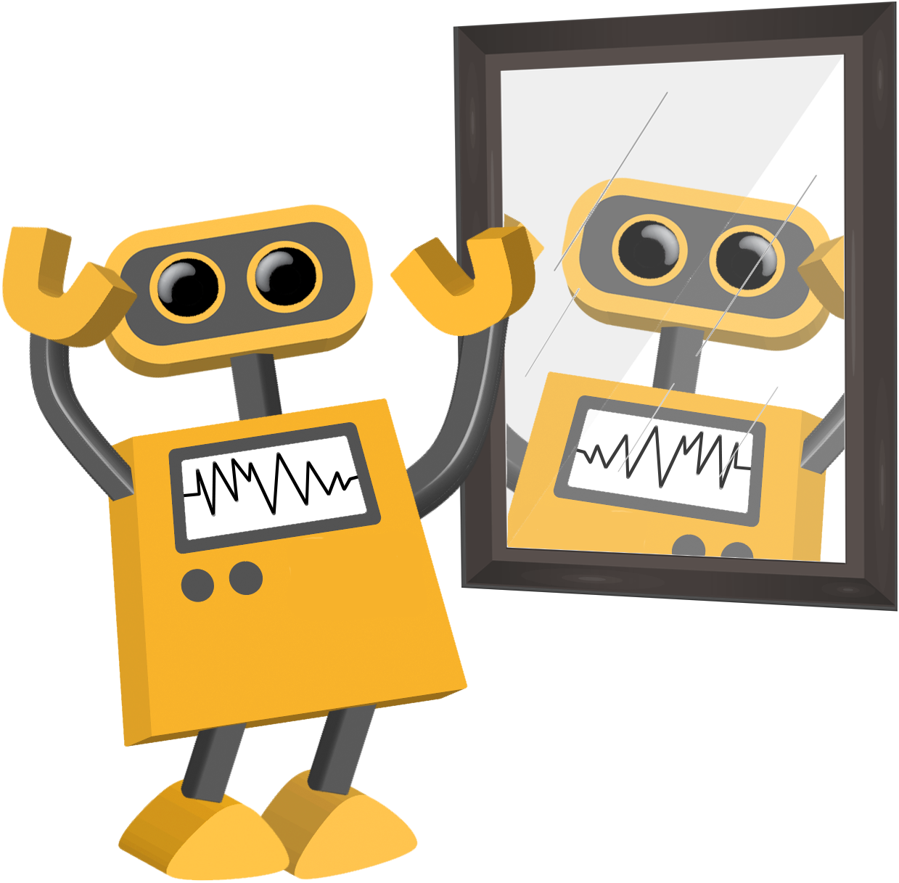
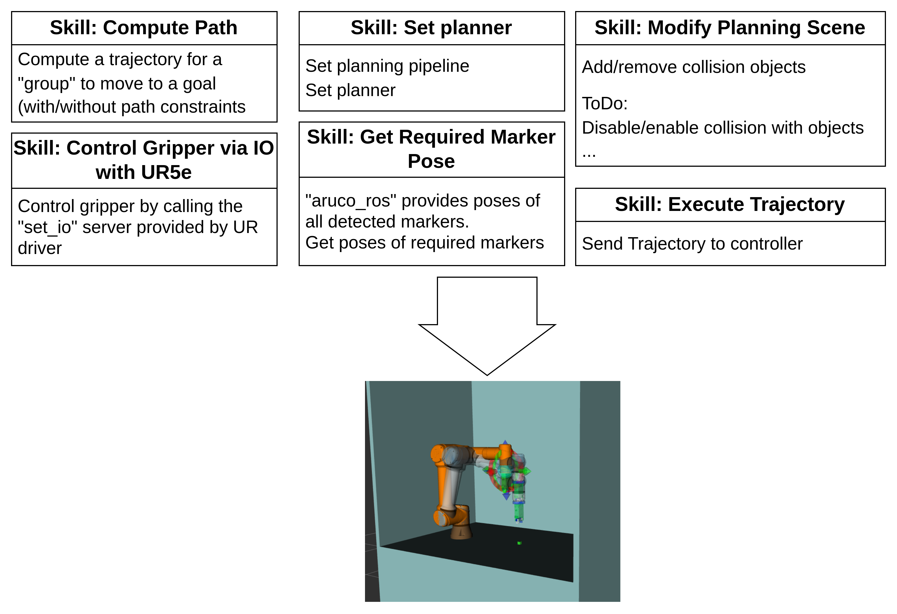

layout: true <div class="header"><img src="https://rosin-project.eu/wp-content/uploads/rosin_ack_logo_wide.png" style="background-color:transparent"/></div> <div class="footer"><img src="https://www.ipa.fraunhofer.de/content/dam/ipa/ipa.svg" /><p>© Fraunhofer IPA</p></div> <div class="triangle"></div> --- # Pick and Place with ArUco Markers <div> <center>  </center> </div> --- ## Application: Pick and Place with ArUco Markers <div style="float:right; margin:10px"> </div> Hardware: - A manipulator - A gripper - An object marked by ArUco marker - A place position marked by ArUco marker - A camera Preparation: - Mount a camera on a manipulator - Calibrate between a camera with a manipulator(via "moveit_calibration"): get TF from end-effector of a manipulator to the camera link Application Process: - Get an object position and a place position via a camera in "camera frame" (e.g. "camera_color_optical_frame") - Transfer the object position and the place position into "planning frame" (a fixed frame in the world) - Manipulator move to pick position to pick an object - Manipulator move to place position to place the object --- ## Architecture Composing an application with skills <div> <center>  </center> </div> --- ## Skills: Compute path Compute a trajectory for a "group" to move to a goal (with/without path constraints) by implementing MoveitCPP, PlanningSceneMonitor, PlanningComponent - Input: - group name - goal: named joint state; PointStamped, PoseStamped, Direction - IK frame (optional) - path constraints (optional) - Output: - robot trajectory What it does: - Transfer goal into the planning frame (a fixed frame in the world)) - If IK frame is not defined, a goal (e.g. PointStamped, PoseStamped, Direction) is defined for the end effector. - If IK frame is defined, a goal (e.g. PointStamped, PoseStamped, Direction) is defined for the IK frame. Then this skill transfer it into the end-effector frame. --- ## Skills: Get required marker pose - Pre-requirement: - running "aruco_ros": publishing poses of all detected markers - Input: - marker IDs - timeout: wait for certain time and calculate average pose - Output: - Poses of required markers --- ## Building applications with skills Pick and Place with ArUco Markers <div style="float:none; margin:10px"> <center> </center> </div> --- # Thank you!